|
|
| sea stars text index | photo index |
| Phylum Echinodermata > Class Stelleroida > Subclass Asteroidea |
| Knobbly
sea star Protoreaster nodosus Family Oreasteridae updated Jul 2020
Where seen? This huge and colourful sea star is sometimes on some of our undisturbed Northern and Southern Shores. Adults are usually seen in coral rubble areas, sometimes many individuals gathered together. These spectacular animals are the highlight of a shore trip! According to Marsh and Fromont, it is found on mud, sand, seagrass flats, sandy coral reef flats in Australia. Features: Diameter with arms, adults to 30cm, juveniles 8-15cm. Hard, heavy body that is calcified. Arms long tapering to rounded tip, thick and triangular in cross-section. Although their arms appear stiff, these can bend quite extensively. When submerged tiny transparent finger-like structures (papulae) might be seen on the upperside. This species is generally identified by the single row of knobs along the upperside of the arms. The shape, colour and number of knobs may vary. Underneath, from grooves under the arms, emerge tube feet with sucker-shaped tips. These tube feet can be bright red or purple! Knobbly sea stars are mostly red, orange or brown, but sometimes white or pink ones are encountered. Blue or green ones are also sometimes seen. The Nodulose sea star (Protoreaster nodulosus) can look very similar. They are difficult to tell apart with certainty in the field. Knobbly sea stars are not venomous, although they are often brightly coloured and covered with dangerous-looking knobs, nodules and spines. They are also called the Giant Nodulated sea star, Horned sea star or Chocolate Chip sea star. |
|
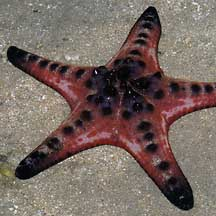 Pulau Sekudu, May 04 |
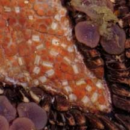 Tiny pedicellaria near the mouth. Pink or purple tube feet. |
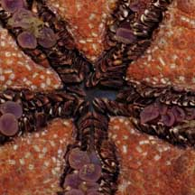 Mouth. |
| What does it eat? According to
Lane, it eats micro-organisms and scavenges on dead creatures. According
to Gosliner, it probably feeds on sponges. According to Schoppe, it
prefers to eat clams and snails but also eats sponges, soft corals
and other invertebrates. According to Marsh and Fromont, it eats algae, biofilm growing on the ground and also scavanges dead animals. According to Coleman the sea star hosts shrimps, scale worms, harlequin crabs and sea star crabs. Others report parasitic snails as well as. But these have not been observed on the Knobbly sea stars seen at low tide. |
 Spawning posture? Cyrene Reef, Aug 11 |
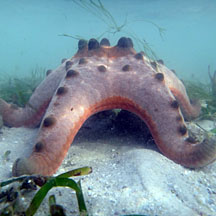 Spawning posture? Cyrene Reef, Mar 12 |

| Knobbly babies: Sometimes, submerged
large adults are seen standing on tip toes during a highish tide or
incoming tide. They are probably getting ready to release eggs and
sperm simultaneously! More
about this spawning posture on
the Echinoblog. Juveniles are commonly seen on Cyrene Reef among
seagrasses, as well as some of our other shores. Status and threats: Knobbly sea stars are harvested from the wild for the live aquarium trade, often selling for only a few dollars. In captivity, they are unlikely to survive long without expert care. In the past, Knobbly sea stars were among the most common large sea stars of Malaya. They are now listed as 'Endangered' on the Red List of threatened animals of Singapore. Cyrene Reef is among the few places left in Singapore where they can be seen regularly. |
 On a hot day, may be contorted. It's attempting to cool off. It is not dying, there is no need to move it. Beting Bronok, Jun 04 |
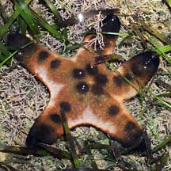 Juveniles are common on Cyrene Reef Cyrene Reef, Apr 08 |
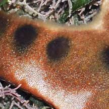 Papulae emerging on the upper surface |
|
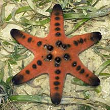 With six arms. Cyrene Reefs, Jan 09 |
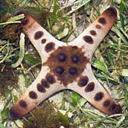 With four arms. Cyrene Reefs, Jan 09 |
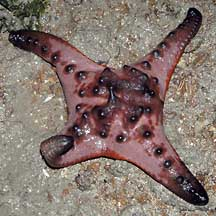 Four-armed Beting Bronok, Jul 03 |
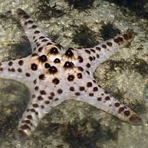 White and pinkish Pulau Sekudu, Dec 03 |
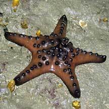 Brown and chocolate Beting Bronok, Jul 05 |
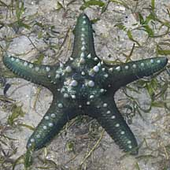 Green Cyrene Reef, May 11 |
|
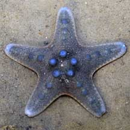 Blue Chek Jawa, Jul 08 |
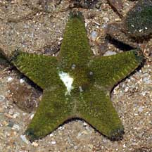 Green Changi, Jul 08 |
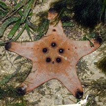 Without knobs on the arms! Cyrene Reef, Nov 08 |
| Knobbly sea stars on Singapore shores |
On wildsingapore
flickr
|
| Other sightings on Singapore shores |
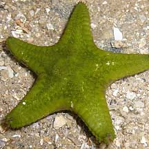 Changi, Jun 10 |
|
Acknowledgements With grateful thanks to Chim Chee Kong of the Star Trackers for identifying the sea stars. Links
|